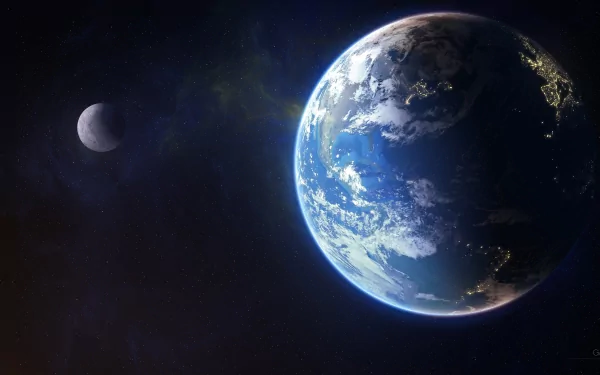

planet, (from Greek planētes, “wanderers”), broadly, any relatively large natural body that revolves in an orbit around the Sun or around some other star and that is not radiating energy from internal nuclear fusion reactions. In addition to the above description, some scientists impose additional constraints regarding characteristics such as size (e.g., the object should be more than about 1,000 km [600 miles] across, or a little larger than the largest known asteroid, Ceres), shape (it should be large enough to have been squeezed by its own gravity into a sphere—i.e., roughly 700 km [435 miles] across, depending on its density), or mass (it must have a mass insufficient for its core to have experienced even temporary nuclear fusion). As the term is applied to bodies in Eas solar system, the International Astronomical Union (IAU), which is charged by the scientific community with classifying astronomical objects, lists eight planets orbiting the Sun; in order of increasing distance, they are Mercury, Venus, Earth, Mars, Jupiter, Saturn, Uranus, and Neptune. Pluto also was listed as a planet until 2006. Until the close of the 20th century, the only planets to be recognized were components of Earth's solar system. At that time astronomers confirmed that other stars have objects that appear to be planets in orbit around them..
For more information click here
